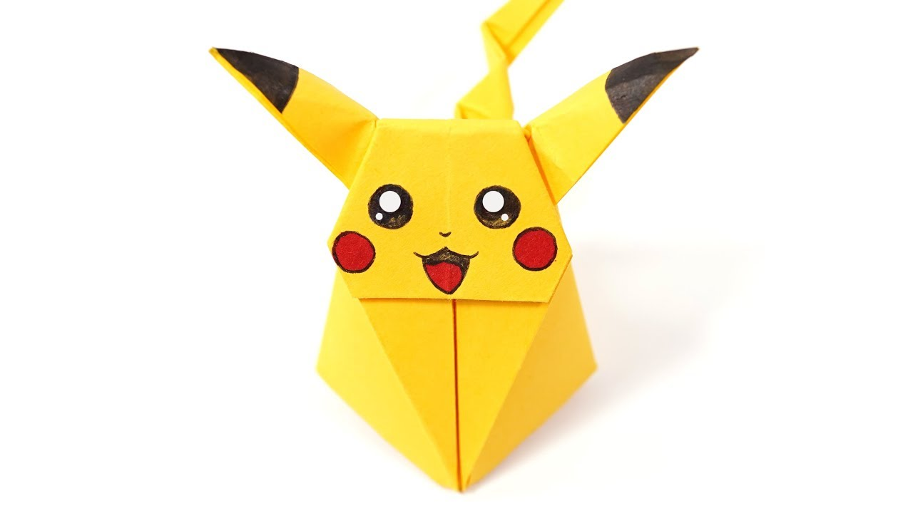

Flowers have a very deep meaning; they show the cycle of creation and express many sentiments.
- Flowers did not always exist; they first appeared 140 million years ago!
- Brocolli is actually a flower.
- Tulips were more valuable then gold in Holland centuries ago.

Pokemon is short for Pocket Monsters.
- Rhydon Was The First Pokemon Ever Created.
- Slowbro Is The Only Pokemon That Can Devolve.
- Hitmonchan and Hitmonlee Got Their Names From Famous Fighters.

Rhinos depict peace, strength and resilience.
- Rhinos have 5 species.
- They have poor vision.
- Their horns are made from keratin

Origami butterflies are a symbol of representing young girls in Japanese culture.
- Butterflies' wings are actually transperent.
- There are more than 10,000 species of butterflies.
- They use their feet to taste nectar.